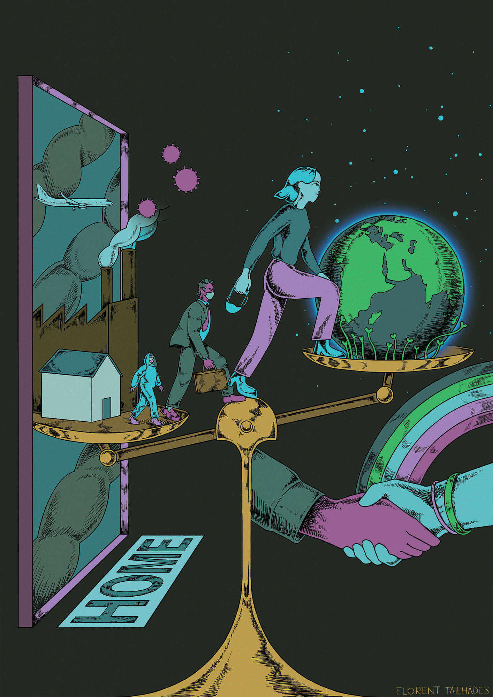

Et si le mot « anticiper » reprenait finalement tout son éclat, toute sa profondeur, toute sa puissance énergisante pour que l’on crée ensemble un monde désirable ? Et si ce mot devenait un phare, un cadre d’action protecteur pour un avenir plus rassurant car plus juste et plus sûr ? L’anticipation serait alors le socle commun d’une dynamique collective et d’une direction qui ferait sens en termes de valeurs, pour minimiser les risques futurs et agir en amont de manière graduelle, intelligente et démocratique.
Nous forçant à une introspection brutale, la pandémie nous met face à nos démons. De manière évidente, anticiper est difficile pour nos sociétés et nos modes de pensée qui nous enferment dans des temporalités cloisonnées. Alors que notre relation au temps devrait être continue, l’opposition est permanente entre d’un côté l’immédiateté et le court-terme, véritable dictature omnipotente et aliénante, et de l’autre les temps longs aux imaginaires devenus quasi secondaires. Certaines études insistaient clairement sur l’occurrence plus fréquente de zoonoses favorisée par la destruction toujours plus galopante des écosystèmes et de la biodiversité, de par nos activités débridées, ayant perdu la vision holiste du « qui nous sommes ». Qu’avons-nous fait de cette probabilité connue et croissante de transmission de zoonoses aux sociétés humaines ? La pandémie actuelle et sa gestion de crise questionnent plus largement notre relation au « risque », dont l’évaluation et la perception sont au cœur même de l’idée d’anticiper.
Les risques liés au changement climatique sont évalués de manière exhaustive depuis plus de 30 ans via les rapports du GIEC, entre autres. Depuis, les observations confirment jour après jour la robustesse des premières projections climatiques publiées dès les années 1980, fussent-elles embryonnaires et rudimentaires par rapport à celles d’aujourd’hui. Et pourtant ! Nos actions n’ont pas été à la hauteur des enjeux car même si l’alarme a été sonnée, puis « l’urgence climatique » déclarée, les risques n’étaient pas perçus comme imminents mais plutôt progressifs voire chroniques, à la différence de cette pandémie qui nous accable. Présenter la crise du coronavirus comme une préfiguration de celles à venir dues aux changements climatiques a ses limites car la nature de la menace et la temporalité des mesures prises, ainsi que leur cadre d’application, sont différentes. Mais cette pandémie ne pourrait-elle pas permettre de changer les règles du jeu dans notre perception du risque, de choisir d’agir maintenant pour subir le moins possible un futur menaçant, sachant que le niveau de la menace est en partie entre nos mains ?
Anticiper en matière de climat, c’est bien évidemment limiter les émissions de gaz à effet serre pour maîtriser les niveaux de réchauffement. Mais c’est aussi s’adapter de manière urgente à l’irréversible, car l’exposition aux risques va inéluctablement augmenter au cours des prochaines années, de par l’inertie du système climatique. Rien d’original ; ce cadre est rabâché. Mais la pandémie nous apporte un éclairage nouveau : −5 %, au plus −10 %, ce sont les premières estimations de la diminution des émissions mondiales de CO2 due au confinement. Ce chiffre est vertigineux au regard de l’effort de baisse nécessaire, qui est d’environ −7 %, non pas sur une année mais tous les ans et dès 2020, pour limiter le réchauffement global entre +1,5 et +2 °C. Ce chiffre illustre la hauteur du défi mais il va bien au-delà : il prouve de manière incontestable qu’anticiper n’est pas synonyme d’arrêter notre monde, mais de le transformer, de transiter, de construire un modèle d’évolution autour de choix de vie partagés qui font collectivement sens. L’épisode historique que nous traversons prouve aussi que l’espoir de technologies salvatrices est un pari bien hasardeux.
C’est en se préparant aux enjeux du long terme que l’on peut au mieux s’extirper de notre présent vertigineux. C’est en agissant dans l’intérêt des générations futures qu’on est le plus signifiant pour celles actuelles, car les maux sont souvent les mêmes et sont déjà là. Les personnes et les sociétés les plus exposées aujourd’hui seront les plus fragiles demain, rejointes par d’autres, nombreuses, actuellement sur le fil de la bascule. La pandémie que nous subissons nous apprend que toute politique ne considérant pas la possibilité de futurs à forts impacts et risques en cascade serait aujourd’hui irresponsable ; c’est valable pour le climat.
Et si le mot « anticiper » ne signifiait pas, tout simplement, accepter qui nous sommes : vulnérables oui, mais assurément acteurs et maîtres d’une part de notre vulnérabilité future.
Diplômé d’une école de communication visuelle, Florent Tailhades est un artiste freelance basé à Paris aimant intervenir sur toutes sortes de projets d’animation en tant qu’animateur 2D, designer ou encore illustrateur.
Climatologue, Christophe Cassouest directeur de recherche au CNRS. Auteur principal du sixième rapport du GIEC, tome 1 : « Les bases physiques », dont la publication est prévue en 2021-2022, il est également co-fondateur des Trains du climat et auteur de deux ouvrages, dont un de littérature jeunesse.